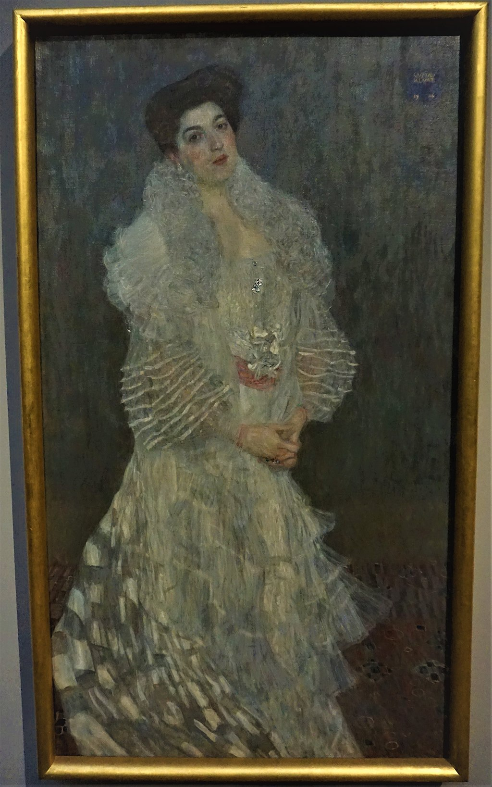

<head>
<meta charset="UTF-8" />
<meta name="keywords" content="drawing, painting" />
<meta name="description" content="drawings by Sunjy" />
<title>Sunjy</title>
<link rel="shortcut icon" type="image/x-icon" href="../../mImages/mCommon/favicon.ico" media="screen" />
<link rel="stylesheet" type="text/css" href="../../mCsses/mCommon/mCssA.css" />
<link rel="stylesheet" type="text/css" href="../../mCsses/mCommon/mCssB.css" />
<link rel="stylesheet" type="text/css" href="../../mCsses/mCommon/mCssC.css" />
<link rel="stylesheet" type="text/css" href="../../mCsses/mCommon/mCssD.css" />
<link rel="stylesheet" type="text/css" href="../../mCsses/mContent/mCssA.css" />
<link rel="stylesheet" type="text/css" href="../../mCsses/mContent/mCssB.css" />
<link rel="stylesheet" type="text/css" href="../../mCsses/mContent/mCssC.css" />
<link rel="stylesheet" type="text/css" href="../../mCsses/mContent/mCssD.css" />
</head>
<script type="text/javascript" src="../../mScripts/mContent/mContentAA.js" /></script>
<script type="text/javascript" src="../../mScripts/mContent/mContentAB.js" /></script>
<script type="text/javascript" src="../../mScripts/mContent/mContentAC.js" /></script>
<script type="text/javascript" src="../../mScripts/mContent/mContentAD.js" /></script>
<script type="text/javascript"></script> 
<script type="text/javascript">
document.write('<div class="mImgAbsolute"></div>');
/*
document.write('<p class="mFontSizeBColor" />From a white paper...</p>');
document.write('<table class="center"><tr><td>');
document.write('');
document.write('</td></tr></table>');
*/
</script>


<script type="text/javascript">
document.write('<p class="mFontSizeBColor" />Portrait of Hermine Gallia</p>');
document.write('<p class="mFontSizeSColor" />“Portrait of Hermine Gallia” by Gustav Klimt is a portrait in which the sitter, Hermine Gallia (1870 – 1936), is wearing a dress designed by Klimt. <br><br>Numerous preliminary drawings were made for the composition of this work, and several alterations are visible to the naked eye.<br><br>Significant portions of the figure’s contour have been altered by Klimt to show the Gallia leaning slightly forward towards the viewer.<br><br>Her clasped hands and the slight upward tilt of her head makes her look as if she is engaging with the viewer.<br><br>Klimt, as in many of his other portraits, has added abstract, geometric designs, in this example, on the dress, and in the background.<br><br>In the background, Klimt added diamond shapes composed of hexagons and triangles patterns on the floor carpet. On Hermine’s dress train, he included a checkerboard effect.<br></p>');
document.write('<table class="center" /><tr><td>');
document.write('<br>Numerous preliminary drawings were made for the composition of this work, and several alterations are visible to the naked eye.<br><br>Significant portions of the figure’s contour have been altered by Klimt to show the Gallia leaning slightly forward towards the viewer.<br><br>Her clasped hands and the slight upward tilt of her head makes her look as if she is engaging with the viewer.<br><br>Klimt, as in many of his other portraits, has added abstract, geometric designs, in this example, on the dress, and in the background.<br><br>In the background, Klimt added diamond shapes composed of hexagons and triangles patterns on the floor carpet. On Hermine’s dress train, he included a checkerboard effect.<br>" />');
document.write('</td></tr></table>');
</script>


